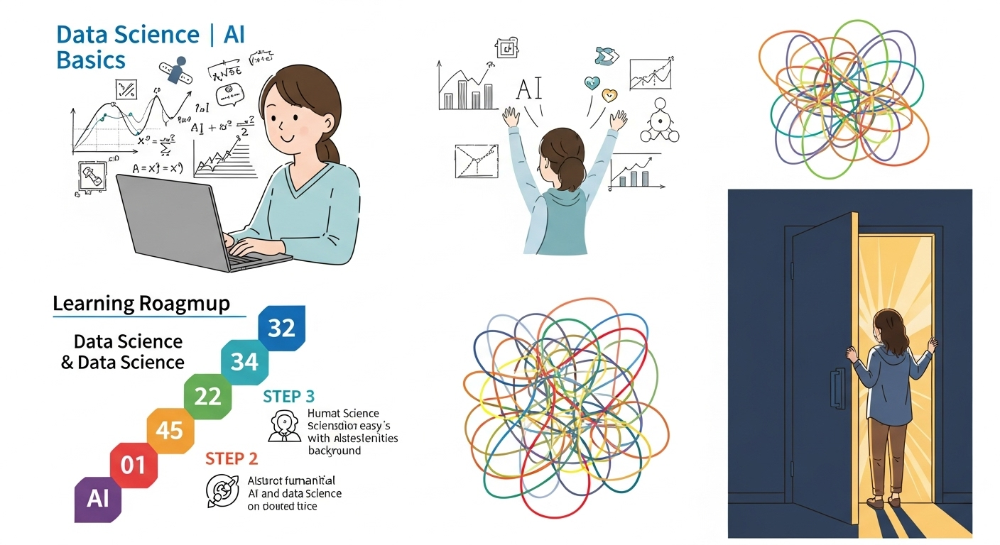
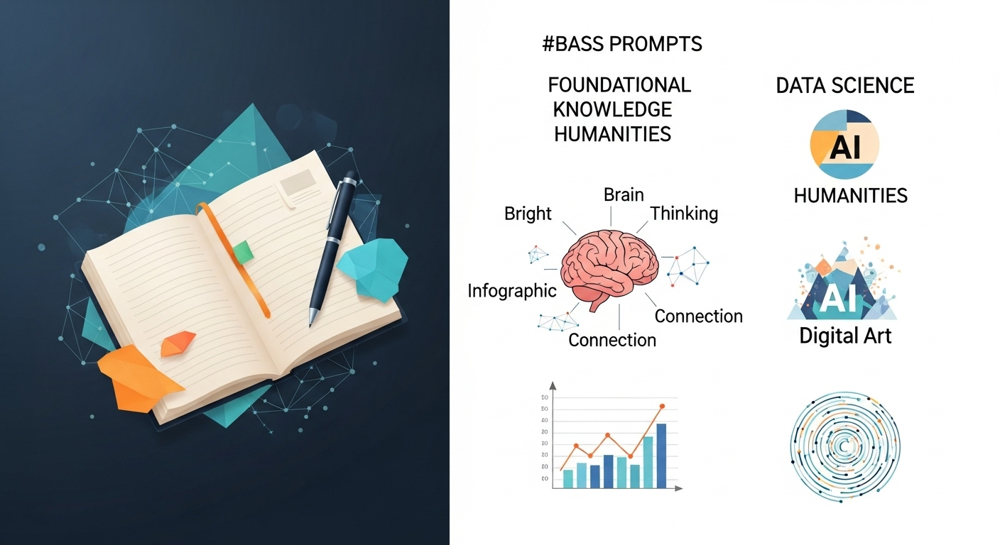
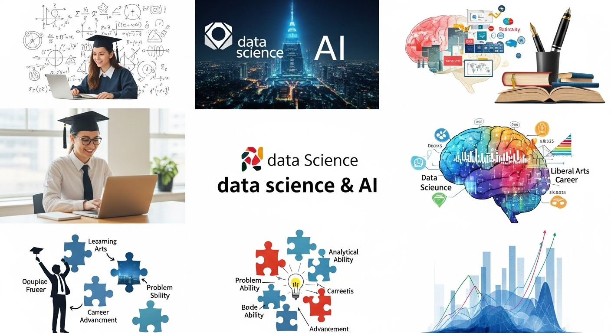
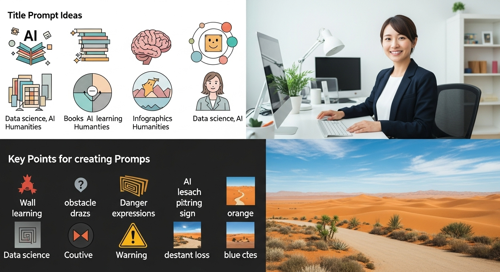
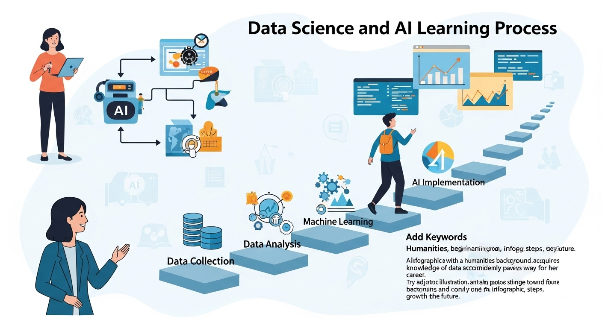
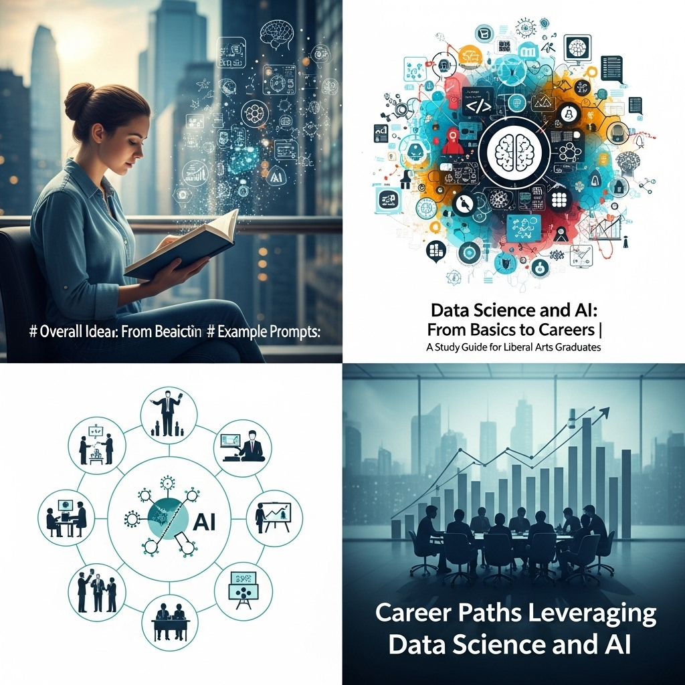
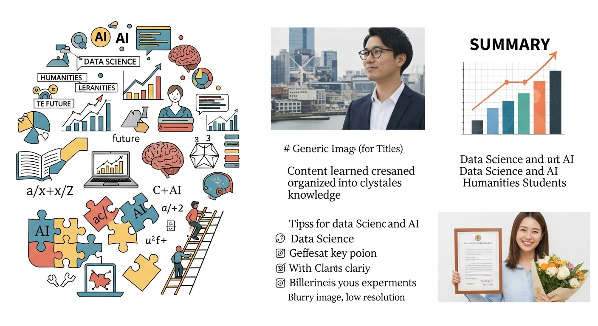

データサイエンスとAIの基礎からキャリアまで|文系出身者向け学習ガイド

導入

「データサイエンス」や「AI（人工知知能）」という言葉を、ニュースや日常会話の中で耳にしない日はないほど、私たちの社会は大きな変化の渦中にあります。スマートフォンを開けば、自分の好みに合わせたニュースや商品が並び、疑問があればAIアシスタントが即座に答えてくれる。こうした便利なサービスの裏側では、膨大なデータと高度なAI技術が活躍しています。
このような時代の流れの中で、「自分もデータやAIを使いこなせるようになりたい」と感じる方は少なくないでしょう。しかし同時に、「自分は文系出身だから、数学やプログラミングは苦手だし、無理だろうな…」と、最初から諦めてしまっている方も多いのではないでしょうか。
もし、あなたがそう感じているのなら、この記事はまさにあなたのために書かれました。
結論からお伝えすると、文系出身であることは、データサイエンスやAIの世界で活躍する上で、決してハンデにはなりません。むしろ、文系ならではの強み、例えば、物事の背景を読み解く力、論理的に文章を構成する力、そして何より「ビジネスや社会の課題を解決したい」という視点は、これからのデータ活用時代において、ますます重要になっていきます。
データサイエンスとは、単に複雑な数式を解いたり、難解なプログラムを書いたりすることだけが目的ではありません。その本質は、「データという”声”に耳を傾け、そこから価値ある物語（インサイト）を紡ぎ出し、ビジネスや社会をより良い方向へ導くこと」にあります。これは、まさに文系的な思考力や読解力が大いに活かせる領域なのです。
もちろん、新しい分野の学習には、相応の努力と時間が必要です。統計学の基礎やプログラミングのスキルなど、乗り越えるべき壁も確かに存在します。しかし、正しい地図（学習のロードマップ）とコンパス（明確な目標）さえあれば、その道のりは決して進めないものではありません。
この記事では、データサイエンスやAIの世界に興味を持ち始めた文系出身のあなたが、自信を持って第一歩を踏み出せるように、次のような内容を、できる限り専門用語を避け、丁寧にご案内していきます。
- データサイエンスとAIの基礎知識：そもそもこれらは何で、どのような関係にあるのか。
- 学ぶことのメリットとデメリット：学習を始める前に知っておきたい光と影。
- 具体的な学習の流れ：何から手をつければ良いのか、具体的なステップ。
- 学んだスキルを活かすキャリアパス：どのような未来が待っているのか。
読み終える頃には、漠然とした憧れや不安が、具体的な目標と行動計画に変わっているはずです。さあ、一緒にデータとAIが織りなす未来への扉を開けてみましょう。あなたの新しい冒険が、ここから始まります。
データサイエンスとAIの基礎知識

本格的な学習の旅を始める前に、まずは目的地の全体像を掴んでおきましょう。ここでは、「データサイエンス」と「AI」という、この分野の二大キーワードについて、その定義や役割、そして両者の関係性を、身近な例を交えながら優しく解き明かしていきます。
１．データサイエンスの定義と役割
「データサイエンス」と聞くと、なんだか難しくて、自分とは縁遠い世界の話のように感じるかもしれません。しかし、その本質はとてもシンプルです。
一言でいうと、データサイエンスとは「データを使って、ビジネスや社会が抱える課題を解決するためのアプローチ（考え方や手法の総称）」です。
もう少し具体的にイメージしてみましょう。あなたは、あるカフェの店長だとします。最近、なぜか午後の時間帯の売上が伸び悩んでいます。さて、どうすれば売上を回復できるでしょうか。
- 「なんとなく、新商品を開発してみようか」
- 「経験上、値下げすればお客さんが来るはずだ」
- 「とりあえず、チラシでも配ってみようか」
こうした「勘」や「経験」に頼った方法も時には有効ですが、成功の確率は決して高くありません。外れてしまえば、時間もコストも無駄になってしまいます。
ここでデータサイエンスの出番です。データサイエンティストは、魔法使いのように答えを導き出すわけではありません。彼らは、探偵のように地道な調査から始めます。
- 問いを立てる（課題設定）：まず、「なぜ午後の売上が伸び悩んでいるのか？」という根本的な問いを立てます。そして、それを「時間帯別の客層に変化はあるか？」「どのメニューの注文が減っているのか？」「天候や曜日は関係しているか？」といった、データで検証可能な具体的な問いに分解していきます。
- データを集める（データ収集）：次に、POSレジの売上データ、会員カードの顧客情報、周辺の天気データなど、問いに答えるために必要となりそうなデータを集めます。
- データを綺麗にする（データ加工・前処理）：集めたデータは、そのままでは使えないことがほとんどです。入力ミスがあったり、情報が欠けていたりします。こうした「汚れた」データを、分析しやすいように整理整頓し、磨き上げていきます。この作業は非常に地味ですが、分析の質を左右する最も重要な工程の一つです。
- データを調べる（データ分析・可視化）：綺麗になったデータを、グラフなどを使って「見える化」します。すると、「午後の時間帯は、学生客が減り、代わりに主婦層が増えている」「ケーキセットの注文が昨年同月比で30%も減少している」「雨の日は、テイクアウトの売上が伸びる傾向にある」といった、これまで気づかなかった事実（インサイト）が浮かび上がってきます。
- 未来を予測する（機械学習モデリング）：さらに、「来月の売上を予測する」「新しいクーポンを発行したら、どれくらいの来店が見込めるか予測する」といった未来予測も行います。ここでAI（機械学習）の技術が使われます。
- 物語を伝える（レポーティング・施策提案）：そして最後に、分析から得られた事実と予測を基に、「主婦層向けの新しいヘルシーなケーキセットを開発し、雨の日限定のテイクアウト割引クーポンを発行しましょう」といった、具体的で根拠のあるアクションプランを提案します。
このように、データサイエンスとは、「課題設定」から「データ収集・加工」、「分析・可視化」、「予測モデリング」を経て、「具体的なアクションの提案」までの一連のプロセス全体を指します。
このプロセスを担うデータサイエンティストには、よく「3つのスキルが必要」と言われます。
- ビジネス力：そもそも解決すべき課題は何かを見つけ出し、分析結果をビジネスの言葉で説明し、具体的なアクションに繋げる力。
- データサイエンス力：情報科学、統計学、機械学習などの知識を使い、データを適切に分析・モデル化する力。
- データエンジニアリング力：データを収集・加工・管理するためのプログラミングやデータベースのスキル。
文系出身の方は、特にこの「ビジネス力」において大きな強みを発揮できます。顧客の気持ちを理解したり、業界の慣習を把握したり、分析結果を分かりやすく伝えたりする能力は、データから価値を生み出す上で不可欠な要素なのです。
２．AI（人工知能）の進化と応用分野
次に、もう一つのキーワードである「AI（人工知能）」について見ていきましょう。AIもまた、非常に広い概念ですが、簡単に言えば「コンピューターが、人間のように学習し、判断し、認識する能力を持つ技術」のことです。
AIの歴史は意外と古く、1950年代から研究が始まりましたが、これまで何度かの「ブーム」と「冬の時代」を繰り返してきました。そして現在、私たちは「第三次AIブーム」の真っ只中にいます。このブームを牽引しているのが、「機械学習」、特に「ディープラーニング（深層学習）」と呼ばれる技術の飛躍的な進歩です。
- 機械学習（Machine Learning）：AIを実現するための一つの手法です。人間が「AならばB」というルールを一つ一つプログラムするのではなく、コンピューター自身が大量のデータからそのルールやパターンを自動的に学習する技術です。例えば、たくさんの「猫の画像」と「犬の画像」をデータとして与えると、コンピューターは自ら猫と犬を見分けるための特徴（耳の形、鼻の長さなど）を学習していきます。
- ディープラーニング（Deep Learning）：機械学習の中の、さらに発展的な一分野です。人間の脳の神経回路（ニューロン）の仕組みを模した「ニューラルネットワーク」というモデルを、非常に深く（多層に）することで、より複雑で抽象的な特徴を捉えることを可能にしました。これにより、画像認識や音声認識、自然言語処理の精度が劇的に向上しました。
私たちの身の回りには、すでにこうしたAI技術が数多く溶け込んでいます。
- 画像認識：スマートフォンの顔認証ロック、工場の製品検査での不良品検知、医療現場でのレントゲン写真からの病変発見など。
- 音声認識：スマートスピーカーへの指示、スマートフォンの音声入力、コールセンターでの通話内容の自動テキスト化など。
- 自然言語処理：Googleなどの検索エンジン、迷惑メールフィルタ、文章の自動要約や翻訳、最近話題のChatGPTのような対話型AIなど。
- 予測・推薦：ECサイトでの「この商品を買った人はこちらも見ています」というレコメンド機能、動画配信サービスでのあなたへのおすすめ作品、金融機関での融資審査など。
- 自動化：囲碁や将棋でプロ棋士を破ったAI、工場のロボットアームの制御、そして実用化が進む自動車の自動運転技術など。
このように、AIはもはやSFの世界の話ではなく、私たちの生活やビジネスを支える、非常に身近で強力なツールとなっているのです。
３．データサイエンスとAIの関係性
さて、ここまで「データサイエンス」と「AI」についてそれぞれ見てきましたが、両者は一体どのような関係にあるのでしょうか。しばしば混同されがちですが、その関係を整理すると、学習の全体像がよりクリアになります。
両者の関係は、「目的」と「手段」、あるいは「料理人」と「最新の調理器具」に例えると分かりやすいかもしれません。
- データサイエンスは、「データから価値を引き出し、課題を解決する」という目的を達成するための、一連のプロセスや学問分野です。これは、最高の料理を作ろうとする「料理人」の役割に似ています。
- AI（特に機械学習）は、その目的を達成するために使われる、非常に強力な「手段」や「ツール」の一つです。これは、料理人が使う「最新式のオーブン」や「切れ味抜群の包丁」のような調理器具に相当します。
先ほどのカフェの店長の例で言えば、データサイエンスという大きな活動（レシピ開発から調理、盛り付け、提供まで）の中で、「来月の売上を予測する」という特定の工程において、AI（機械学習）という最新の調理器具が使われる、というイメージです。
データサイエンティストは、常にAIを使うわけではありません。時には、単純なデータの集計やグラフ化だけで、十分に価値のある発見ができることもあります。大切なのは、解決したい課題に対して、AIが最適なツールなのか、それとももっとシンプルな手法で十分なのかを適切に見極めることです。高価な最新式オーブンは、どんな料理にも使えるわけではないのと同じです。
逆の視点から見ると、AIは「データ」という燃料がなければ動きません。AIが賢くなるためには、大量かつ良質なデータで学習させることが不可欠です。つまり、データサイエンスのプロセスを通じて準備された「綺麗で意味のあるデータ」が、AIの性能を最大限に引き出す鍵となります。
まとめると、
- データサイエンスは、課題解決を目的とした、データ活用のための広範なアプローチ。
- AI（機械学習）は、データサイエンスのプロセスの中で、特に「予測」や「分類」といった高度な分析を行う際に用いられる強力な技術。
- 両者は密接に連携しており、優れたデータサイエンスがAIの能力を引き出し、AIがデータサイエンスの可能性を広げる、という相互補完の関係にあります。
文系出身のあなたがこの分野を目指す上で大切なのは、まず「データを使って何を解決したいのか？」というデータサイエンスの根幹にある「問いを立てる力」を意識することです。その上で、その問いに答えるための選択肢の一つとして、AIという強力な武器をどう使っていくかを学んでいく。この順番で捉えることで、技術の学習が目的化することなく、常にビジネスや社会への貢献という本質を見失わずに進んでいけるはずです。
データサイエンスとAIを学ぶメリット

新しい分野の学習には、時間もエネルギーも必要です。だからこそ、その先にどのような素晴らしい未来が待っているのかを知ることは、学習を続けるための大きなモチベーションになります。ここでは、データサイエンスとAIを学ぶことで得られる3つの大きなメリットについて、具体的にお話ししていきましょう。
メリット１．市場価値の高い専門スキルを習得
現代のビジネス環境を語る上で欠かせないキーワードが「DX（デジタルトランスフォーメーション）」です。これは、単にITツールを導入するという話ではなく、データやデジタル技術を活用して、ビジネスモデルや業務プロセス、さらには企業文化そのものを根本から変革していこうという大きな潮流を指します。
このDXを推進する上で、まさにエンジンとなるのが、データサイエンスとAIのスキルです。多くの企業が、自社に蓄積された膨大なデータを「宝の山」と認識し始めていますが、その宝を掘り出し、磨き上げ、価値に変えることができる人材は、まだまだ圧倒的に不足しているのが現状です。
経済産業省の調査でも、IT人材、特にAIやデータサイエンスを担う先端IT人材の不足は年々深刻化しており、2030年には数十万人規模で不足すると予測されています。需要が高い一方で供給が追いついていないため、これらのスキルを持つ人材の市場価値は非常に高くなっています。
具体的には、データサイエンティストやAIエンジニア、データアナリストといった専門職は、他の職種と比較して高い年収水準が期待できるキャリアの一つです。もちろん、一足飛びに高収入が得られるわけではありませんが、スキルと経験を積み重ねていくことで、着実にキャリアアップと収入増を目指すことができます。
そして、ここで特に強調したいのが、文系出身者ならではの価値です。
データ分析の世界では、「ドメイン知識」という言葉が非常に重視されます。これは、その業界特有の知識やビジネス慣習、顧客に関する深い理解などを指します。例えば、金融業界、小売業界、医療業界、Webマーケティング業界など、それぞれの分野には独自の常識や課題が存在します。
いくら高度な分析技術を持っていても、このドメイン知識がなければ、的外れな分析をしてしまったり、分析結果から意味のある示唆を導き出せなかったりします。
文系出身で、すでに何らかの業界での実務経験がある方は、この「ドメイン知識」という大きなアドバンテージを持っています。あなたがこれまで培ってきた業界知識や顧客への理解に、データサイエンスという新しい武器が加わることで、「鬼に金棒」の状態が生まれるのです。
「業界のことを深く理解している」×「データを扱う専門スキルも持っている」
この掛け算ができる人材は、企業にとって喉から手が出るほど欲しい存在です。専門スキルを身につけることは、あなたを代替の効かない、唯一無二のプロフェッショナルへと押し上げてくれる、強力なパスポートとなるでしょう。
メリット２．データに基づいた意思決定能力の向上
データサイエンスとAIを学ぶメリットは、専門職に就くだけではありません。むしろ、あらゆるビジネスパーソンにとって普遍的に役立つ「思考のOS」をアップデートできる点に、その真価があると言えるかもしれません。
その「思考のOS」とは、「データドリブンな意思決定能力」です。
私たちは仕事の中で、日々、大小さまざまな意思決定を迫られます。「どちらの広告デザインを採用すべきか？」「どの顧客層にアプローチすべきか？」「このプロジェクトは継続すべきか、中止すべきか？」
こうした場面で、過去の経験や勘、あるいは声の大きい人の意見に流されて判断を下していないでしょうか。もちろん、経験や直感も重要ですが、それだけに頼った意思決定は、個人の主観に左右されやすく、再現性がありません。また、なぜその結論に至ったのかを、他者に客観的に説明することも困難です。
データサイエンスの学習を通じて、あなたは物事を「データ」という共通言語で語る術を身につけます。
- 仮説思考：「おそらく、20代女性向けのこちらのデザインの方がクリック率が高いだろう」という仮説を立てる。
- データ収集・検証：実際にA/Bテストを行い、どちらのデザインのクリック率が統計的に有意に高いかをデータで検証する。
- 客観的な結論：「データの結果、BのデザインはAに比べてクリック率が1.5倍高いことが分かりました。したがって、Bのデザインを本格展開することを推奨します」と、誰が見ても納得できる根拠をもって結論を導き出す。
このような思考プロセスは、一度身につけてしまえば、あなたのあらゆる仕事の質を劇的に向上させます。
- マーケターであれば、感覚的なペルソナ設定ではなく、購買データに基づいた顧客セグメンテーションを行い、より効果的なキャンペーンを企画できます。
- 営業担当者であれば、過去の成約データから「受注確度の高い顧客」のパターンを学び、限られた時間の中で効率的にアプローチできます。
- 人事担当者であれば、従業員アンケートのデータを分析し、離職の予兆を早期に発見し、具体的な対策を講じることができます。
- 企画職であれば、市場データやユーザーの行動ログを分析し、より顧客ニーズに合致した新商品や新サービスを立案できます。
データという客観的な事実に基づいて物事を判断し、論理的に説明する能力は、職種や業界を問わず、これからの時代を生き抜くビジネスパーソンにとって必須のスキルです。データサイエンスを学ぶことは、日々の仕事の精度を高め、あなたの発言に説得力と信頼性をもたらしてくれる、一生モノの知的財産となるでしょう。
メリット３．新しいビジネスやイノベーションの創出
データサイエンスとAIは、既存の業務を効率化したり、意思決定の質を高めたりするだけでなく、これまで存在しなかった全く新しいビジネスやサービスを生み出す、強力な起爆剤にもなります。
歴史を振り返ると、新しいテクノロジーの登場は、常に社会に大きな変革（イノベーション）をもたらしてきました。蒸気機関が産業革命を引き起こし、インターネットが情報革命をもたらしたように、データとAIは今、まさに「第四次産業革命」とも呼ばれるほどのインパクトを社会に与えつつあります。
この変革の時代において、データとAIを理解しているということは、単なる「利用者」で終わるのではなく、自らが「創造者」としてイノベーションの担い手になるチャンスを手にすることを意味します。
例えば、以下のような事例は、データとAIがもたらしたイノベーションのほんの一例です。
- Netflix：膨大な視聴履歴データを分析し、個々のユーザーに最適化された作品を推薦するレコメンドエンジンを開発。これにより、ユーザーの満足度を劇的に高め、動画配信サービスの覇者となりました。さらに、どのようなストーリーや配役がヒットするのかをデータから予測し、オリジナル作品の制作にも活かしています。
- Uber：スマートフォンのGPSデータとAIを活用し、乗りたい人と乗せたい人をリアルタイムで効率的にマッチングさせるという、全く新しい交通サービスを生み出しました。需要と供給に応じて価格が変動する「ダイナミックプライシング」も、データ分析とAIが可能にしたイノベーションです。
- スマート農業：ドローンが撮影した農地の画像データをAIが解析し、作物の生育状況や病害虫の発生をピンポイントで特定。必要な場所にだけ、必要な量の水や農薬を散布することで、生産性の向上と環境負荷の低減を両立させています。
これらの例に共通するのは、これまで見過ごされてきた「データ」の中に新たな価値を見出し、AIという技術を使って、それを具体的なサービスや仕組みとして社会に実装した点です。
あなたがデータサイエンスとAIを学ぶことで、あなた自身のビジネスフィールドにおいても、新たな可能性の扉が開かれます。
- 「自社の顧客データと外部のオープンデータを組み合わせれば、新しい需要を予測できるのではないか？」
- 「日々の業務で発生する大量のテキストデータをAIで分析すれば、業務プロセスを劇的に改善できるのではないか？」
- 「画像認識AIを使えば、これまで人手に頼っていた検品作業を自動化できるのではないか？」
このように、データとAIの知識は、あなたに新しい「視点」と「発想の引き出し」を与えてくれます。それは、既存の枠組みの中で改善を繰り返すだけでなく、全く新しいビジネスモデルや社会の仕組みを構想し、実現するための力となります。
未来をただ待つのではなく、自らの手で未来を創り出したい。そんな情熱を持つ人にとって、データサイエンスとAIは、最もエキサイティングで可能性に満ちたフロンティアだと言えるでしょう。
データサイエンスとAI学習のデメリット

ここまで、データサイエンスとAIを学ぶことの輝かしい側面についてお話ししてきました。しかし、どんなことにも光と影があるように、この分野の学習には、乗り越えるべき困難や、あらかじめ覚悟しておくべき側面も存在します。ここでは、学習を始めてから「こんなはずではなかった」と後悔しないために、3つの代表的なデメリット（あるいは挑戦すべき課題）について、正直にお伝えしたいと思います。
デメリット１．継続的な学習と知識のアップデート
データサイエンスとAIの分野における最大の挑戦の一つは、その技術の進歩の速さです。この世界は、まさに「ドッグイヤー（犬の1年は人間の7年に相当する）」、あるいはそれ以上のスピードで進化し続けています。
昨日まで最先端だった技術が、今日にはもう古いものになっている、ということも珍しくありません。新しい分析手法、より高性能な機械学習モデル、便利なプログラミングライブラリやツールが、毎月のように世界中の研究者や開発者から発表されています。特に近年、ChatGPTに代表される生成AIの登場は、業界の常識を根底から覆すほどのインパクトをもたらしました。
これはつまり、「一度学習すれば、それで終わり」という分野ではない、ということです。
大学で特定の学問を修めて学位を取るように、ゴールが明確に設定されているわけではありません。むしろ、プロのデータサイエンティストやAIエンジニアになった後も、常に新しい知識を学び続け、自分のスキルをアップデートし続ける姿勢が不可欠となります。
具体的には、以下のような継続的な学習活動が求められます。
- 最新の論文を読む：arXiv（アーカイヴ）などのプレプリントサーバーに投稿される、世界最先端の研究論文に目を通し、新しいアルゴリズムやアプローチの動向を追う。
- 技術ブログやニュースをチェックする：国内外の企業の技術ブログや、専門メディア、トップカンファレンス（学会）の発表などを定期的に確認し、業界のトレンドを把握する。
- 新しいツールやライブラリを試す：新しいバージョンがリリースされたライブラリの変更点を学んだり、話題の新しいツールを実際に自分の手で動かしてみたりする。
- 勉強会やコミュニティに参加する：他の学習者や実務者と情報交換を行い、自分の知らない知識や視点に触れる。
このような「学び続ける」という行為を、負担や苦痛と感じてしまう人にとっては、この分野は少し厳しいかもしれません。しかし、見方を変えれば、これは大きな魅力でもあります。
知的好奇心が旺盛な人にとっては、常に新しい発見があり、飽きることがありません。昨日できなかったことが、今日学んだ新しい技術で可能になる。そんな知的な興奮を味わい続けることができる、非常にエキサイティングな分野でもあるのです。
この「継続的な学習」をデメリットと捉えるか、それとも成長の機会と捉えるか。あなたの学習スタイルや性格と照らし合わせて、じっくり考えてみることが重要です。
デメリット２．専門知識習得にかかる時間
文系出身者の方がデータサイエンスの学習を始める際に、最も高い壁と感じるのが、習得すべき専門知識の幅広さかもしれません。
データサイエンスは、単一の学問ではなく、複数の異なる分野の知識が融合した学際的な領域です。前述した「データサイエンティストに必要な3つのスキル（ビジネス力、データサイエンス力、データエンジニアリング力）」を思い出してみてください。このうち、特に「データサイエンス力」と「データエンジニアリング力」をゼロから身につけるには、相応の学習時間が必要になります。
具体的に、どのような知識を学ぶ必要があるのか、代表的なものを挙げてみましょう。
- 数学：
- 統計学：平均、分散、標準偏差といった基本的な記述統計から、仮説検定、確率分布、回帰分析などの推測統計まで。データを正しく解釈し、偶然と必然を見分けるための必須知識です。
- 線形代数：ベクトルや行列の計算。大量のデータを効率的に扱うため、また、多くの機械学習アルゴリズムの内部的な仕組みを理解するための基礎となります。
- 微分・積分：関数の変化率を捉える学問。機械学習モデルが「学習」するプロセス（最適化）を理解する上で中心的な役割を果たします。
- プログラミング：
- Pythonの基礎：変数、データ型、制御構文（if文、for文）、関数、クラスなど、プログラミングの基本的な考え方と文法。
- データ分析ライブラリ：NumPy（数値計算）、Pandas（データ加工・集計）、Matplotlib/Seaborn（データ可視化）など、Pythonでデータ分析を行うための必須ツール。
- 機械学習：
- 基本的なアルゴリズムの理論：線形回帰、ロジスティック回帰、決定木、サポートベクターマシン、k-meansクラスタリングなど、代表的な手法がどのような仕組みで動いているのか。
- モデルの評価方法：作ったモデルが良いものか悪いものかを客観的に評価するための指標（正解率、適合率、再現率、RMSEなど）の理解。
これらの項目をリストアップすると、その多さに圧倒されてしまうかもしれません。正直に言って、これらの知識を一夜漬けで身につけることは不可能です。一般的に、基礎を固めて簡単な分析ができるようになるまでに、少なくとも300〜500時間程度の学習時間が必要と言われています。さらに、実務レベルで活躍できるようになるには、1000時間以上の学習と実践が必要になるでしょう。
これは、決して楽な道のりではありません。しかし、ここで大切なのは、「全てを完璧に理解してから次に進もうとしない」ということです。特に数学に関しては、大学で学ぶような厳密な証明を全て理解する必要はありません。まずは「この手法が何のためにあり、どんな場面で使えるのか」という直感的なイメージを掴むことが重要です。
学習の初期段階では、理論の深掘りに時間を使いすぎるよりも、実際に手を動かしながらプログラミングでデータを触ってみて、「こういうコードを書くと、こういう結果が出るのか」という体験を積み重ねる方が、モチベーションを維持しやすく、効率的です。
学習にかかる時間は、確かにデメリットの一つです。しかし、それは裏を返せば、それだけ専門性が高く、参入障壁があるということでもあります。この壁を乗り越えた先には、希少価値の高いスキルが身についているということを、心に留めておいてください。
デメリット３．実践経験を積む機会の確保
データサイエンスの学習において、知識をインプットすることと同じくらい、いや、それ以上に重要なのが、アウトプット、つまり実践経験を積むことです。
教科書を読んで統計学の理論を理解したり、動画教材を見てプログラミングの文法を覚えたりすることは、いわば「素振り」のようなものです。いくら素振りが上手くなっても、実際に打席に立ってピッチャーの投げるボールを打つ経験をしなければ、本当の意味で野球が上手くはなりません。
データサイエンスも同様で、リアルなデータに向き合い、試行錯誤しながら分析を進める中でしか得られない、暗黙知や実践的なスキルが数多く存在します。
しかし、特に実務未経験の学習者にとって、この「実践経験を積む機会」を確保することが、意外と難しい課題となります。
多くの企業が保有するリアルなビジネスデータは、顧客の個人情報や企業の機密情報を含んでいるため、当然ながら社外の人間が簡単にアクセスすることはできません。そのため、学習者は公開されているデータセットを使って練習することになりますが、これらは教育用に綺麗に整備されていることが多く、実務で直面するような「汚くて不完全なデータ」を扱う泥臭い経験は積みにくい、という側面があります。
また、一人で学習していると、自分の分析アプローチが正しいのか、もっと良い方法はないのか、といった点について客観的なフィードバックを得る機会が少ないという問題もあります。壁にぶつかった時に、気軽に相談できる相手がいないと、挫折の原因にもなりかねません。
では、どうすればこのデメリットを克服できるのでしょうか。幸いなことに、現在では未経験者でも実践経験を積むための素晴らしいプラットフォームや機会が存在します。
- Kaggle（カグル）：世界中のデータサイエンティストが集まるデータ分析コンペティションのプラットフォームです。企業や研究機関が課題とデータを提供し、参加者は最も精度の高い予測モデルを競い合います。上位入賞は難しいですが、他の参加者が公開している分析コード（Notebook）を読んだり、ディスカッションに参加したりするだけでも、プロの思考プロセスを学ぶ絶好の機会となります。
- 公開データセットの活用：政府の統計ポータルサイト（e-Stat）や、地方自治体が公開しているオープンデータ、様々な研究機関が提供するデータセットなど、無料で利用できる質の高いデータはたくさんあります。これらのデータを使って、自分で「問い」を立て、分析プロジェクトを完遂させる経験は、大きな自信と実績になります。
- ポートフォリオの作成：個人で行った分析プロジェクトの結果を、ブログ記事やGitHub（ギットハブ）のようなプラットフォームで公開し、「ポートフォリオ（作品集）」としてまとめることも重要です。これは、あなたのスキルと熱意を客観的に証明する強力な武器となり、就職・転職活動の際に大いに役立ちます。
実践の場を自ら作り出す努力は確かに必要ですが、これらの活動を通じて得られる経験は、単なる知識の習得をはるかに超える価値があります。この課題を能動的に乗り越えていくことが、学習者から実践者へとステップアップするための鍵となるでしょう。
データサイエンスとAI学習の流れ

さて、データサイエンスの世界の魅力と、そこに待ち受ける挑戦について理解が深まったところで、いよいよ具体的な学習のステップに進んでいきましょう。広大な知識の海を前にして、どこから手をつければ良いのか途方に暮れてしまうのは、誰もが通る道です。ここでは、文系出身の初学者が、迷わずに着実にスキルを身につけていくための、標準的な学習の流れを4つのステップに分けてご紹介します。
流れ１．学習目標の設定と基礎知識の習得
何事も、最初の一歩が肝心です。そして、データサイエンス学習における最も重要な第一歩は、「なぜ学びたいのか？」「学んだスキルで何を成し遂げたいのか？」という学習目標を明確に設定することです。
目標が曖昧なまま学習を始めると、学ぶべき範囲の広さに圧倒されて途中で道に迷ってしまったり、モチベーションが続かなくなったりする原因になります。逆に、具体的で魅力的な目標があれば、それが羅針盤となり、困難な学習の道のりを照らす光となってくれるでしょう。
目標は、壮大なものである必要はありません。むしろ、あなた自身の仕事や興味に根ざした、身近で具体的なものが望ましいです。
- Webマーケターの場合：「Webサイトのアクセスログを分析して、ユーザーが離脱する原因を特定し、コンバージョン率を5%改善したい」
- 営業企画の場合：「過去の失注データを分析して、失注しやすい顧客パターンの仮説を立て、営業チームに共有したい」
- 人事担当の場合：「従業員満足度アンケートの結果を可視化し、部署ごとの課題を明確にして、具体的な改善策を提案したい」
- 個人的な興味の場合：「好きなスポーツチームの過去の試合データを分析して、勝敗を予測するモデルを作ってみたい」
このように具体的な目標を設定することで、学ぶべき知識の優先順位が自ずと見えてきます。「コンバージョン率を改善したい」のであれば、A/Bテストの結果を評価するための「統計的仮説検定」の知識が重要になりますし、「勝敗を予測したい」のであれば、「分類モデル」と呼ばれる機械学習の手法を学ぶ必要があります。
目標が決まったら、次に取り組むべきは、データサイエンスの世界の共通言語とも言える「統計学」の基礎知識の習得です。
文系出身者にとって「数学」と聞くと身構えてしまうかもしれませんが、心配は無用です。ここで必要なのは、難しい数式を暗記したり、複雑な計算を手で解いたりすることではありません。大切なのは、それぞれの統計的な概念が「何を意味しているのか」「どんな時に役立つのか」を直感的に理解することです。
まずは、以下のような基本的なキーワードから学んでいきましょう。
- 記述統計：データの基本的な性質を要約するための手法。
- 平均値：データの中心的な傾向を表す。
- 中央値：データを大きさ順に並べたときの真ん中の値。外れ値の影響を受けにくい。
- 最頻値：最も頻繁に出現する値。
- 分散・標準偏差：データのばらつき具合を表す。
- ヒストグラム：データの分布を視覚的に表現するグラフ。
- 推測統計：手元にある一部のデータ（標本）から、その背後にある全体の集団（母集団）の性質を推測するための手法。
- 相関：2つのデータ間の関係性の強さ（例：広告費と売上の関係）。
- 回帰分析：一方のデータからもう一方のデータを予測する式を求める（例：広告費から売上を予測する）。
- 仮説検定：データから言えることの正しさを確率的に判断する（例：新しいWebデザインは、本当に従来のデザインより効果があると言えるか？）。
これらの知識は、書籍やオンライン学習サイト（Udemy, Coursera, Progate, ドットインストールなど）、YouTubeの解説動画などを活用して学ぶことができます。特に、文系向けに図や具体例を多用して解説している教材を選ぶと、スムーズに理解が進むでしょう。この段階では、完璧主義にならず、まずは全体像を掴むことを目指してください。
流れ２．プログラミング言語（Python）の学習
統計学の基礎的な考え方を学んだら、次はいよいよ、データを実際にコンピューターで扱うための道具、プログラミング言語の学習です。
データサイエンスの世界では、いくつかのプログラミング言語が使われていますが、現在、圧倒的な主流となっているのが「Python（パイソン）」です。これから学習を始めるのであれば、迷わずPythonを選ぶことをお勧めします。
Pythonがこれほどまでに支持されているのには、明確な理由があります。
- 文法がシンプルで読みやすい：他のプログラミング言語に比べて、人間が読む英語に近い、直感的で分かりやすい文法構造を持っています。初学者がつまずきにくい、優しい言語と言えます。
- データサイエンス用のライブラリが豊富：ライブラリとは、よく使う機能をまとめた便利な「道具箱」のようなものです。Pythonには、データ分析や機械学習を簡単に行うための、非常に強力で高機能なライブラリが世界中の開発者によって作られ、公開されています。これらを使えば、複雑な処理も数行のコードで実現できてしまいます。
- 学習教材やコミュニティが充実している：世界中で最も人気のある言語の一つであるため、書籍、オンラインコース、解説ブログなど、学習のための情報が豊富にあります。また、分からないことがあっても、インターネットで検索すれば、多くの場合は先人たちの残した解決策を見つけることができます。
Pythonの学習も、まずは基本的な文法から始めます。
- 変数とデータ型：数値や文字列などのデータに名前をつけて保存する方法。
- リスト、タプル、辞書：複数のデータをまとめて扱うための仕組み。
- 制御構文：if文（条件によって処理を分ける）、for文（繰り返し処理を行う）。
- 関数：一連の処理をひとまとめにして、再利用しやすくする仕組み。
これらの基礎文法は、Progateやドットインストールといったオンライン学習サービスで、実際にコードを書きながらゲーム感覚で学ぶのが効率的です。
そして、Pythonの基礎文法をある程度マスターしたら、いよいよデータサイエンスの「三種の神器」とも呼ばれる、以下のライブラリの学習に進みます。
- NumPy（ナムパイ）：数値計算、特にベクトルや行列といった、複数の数値をまとめて高速に計算するためのライブラリです。データ分析の土台となる、非常に重要な存在です。
- Pandas（パンダス）：Excelの表のような、行と列からなるデータを自在に扱うためのライブラリです。データの読み込み、欠損値の処理、集計、並べ替え、結合など、データ分析の前処理（データを綺麗にする作業）において絶大な威力を発揮します。データサイエンティストは、仕事の時間の多くをこのPandasと共に過ごすと言っても過言ではありません。
- Matplotlib（マットプロットリブ） / Seaborn（シーボーン）：データをグラフ化（可視化）するためのライブラリです。Matplotlibが基本的なグラフ描画機能を、Seabornがそれをより美しく、統計的な表現豊かに描画する機能を提供します。棒グラフ、折れ線グラフ、散布図、ヒストグラムなどを作成し、データに隠されたパターンや傾向を視覚的に捉えるために不可欠です。
これらのライブラリも、まずは基本的な使い方から学び始めましょう。書籍やオンライン教材には、サンプルデータを使ったチュートリアルが豊富に用意されています。実際に自分の手でコードを書き、データを読み込み、集計し、グラフを描いてみる。この「手を動かす」経験を積み重ねることが、スキルを定着させる上で何よりも大切です。
流れ３．データ分析・機械学習の基礎学習
Pythonとデータ分析ライブラリという強力な武器を手に入れたら、次はいよいよ、それらを使ってデータから価値ある知見を引き出すための「戦術」、すなわちデータ分析と機械学習の手法を学びます。
まず、一般的なデータ分析のプロセスの流れを理解することが重要です。これは、どのような分析プロジェクトにも共通する、基本的な思考のフレームワークです。
- 課題設定：何を明らかにするために分析を行うのか、目的を明確にする。（流れ１で設定した学習目標がこれにあたります）
- データ収集：分析に必要なデータを集める。
- データ理解・前処理：データを観察し、その特徴を把握する。欠損値や外れ値の処理、分析しやすい形式への加工などを行う。（Pandasが活躍する場面です）
- データの可視化：グラフなどを用いて、データに潜むパターンや関係性を視覚的に探る。（Matplotlib/Seabornが活躍する場面です）
- モデリング：必要に応じて、機械学習などの手法を用いて、予測や分類のモデルを構築する。
- 評価：モデルの精度を客観的な指標で評価し、その妥当性を検証する。
- 考察・施策提案：分析結果やモデルから得られた知見を解釈し、ビジネス上の具体的なアクションに繋がる提案を行う。
この一連の流れを意識しながら、次に機械学習の主要なタスクについて学んでいきます。機械学習でできることは多岐にわたりますが、初学者はまず、以下の3つの代表的なタスクから理解を深めるのが良いでしょう。
- 回帰（Regression）：過去のデータから、連続する数値を予測するタスクです。
- 例：「家の広さ、駅からの距離、築年数」から「家の価格」を予測する。
- 例：「広告費、気温、曜日」から「来店の客数」を予測する。
- 代表的なアルゴリズム：線形回帰、決定木回帰、リッジ回帰など。
- 分類（Classification）：データを、あらかじめ決められた複数のカテゴリのいずれかに分類するタスクです。
- 例：「メールの本文」から、そのメールが「迷惑メールか、そうでないか」を分類する。
- 例：「顧客の年齢、購入履歴、サイト滞在時間」から、その顧客が「商品を購入するか、しないか」を分類する。
- 代表的なアルゴリズム：ロジスティック回帰、決定木、サポートベクターマシン（SVM）、ランダムフォレストなど。
- クラスタリング（Clustering）：正解ラベルがないデータの中から、似た者同士のグループ（クラスター）を自動的に見つけ出すタスクです。
- 例：顧客の購買データを基に、顧客を「高頻度・高単価のロイヤル顧客」「たまにしか来ないが、まとめ買いする顧客」「セール品しか買わない顧客」などのグループに分ける（顧客セグメンテーション）。
- 例：文章データを基に、似たようなトピックの文章をグループ分けする。
- 代表的なアルゴリズム：k-means法、階層的クラスタリングなど。
これらの機械学習アルゴリズムを学ぶ際には、「Scikit-learn（サイキット・ラーン）」というPythonのライブラリが非常に役立ちます。Scikit-learnは、上記で挙げたような主要な機械学習アルゴリズムのほとんどを、統一された簡単なコードで実行できるようにした、驚くほど便利なライブラリです。
この段階での学習のポイントは、各アルゴリズムの背後にある複雑な数式を完全に理解しようとするのではなく、「それぞれのアルゴリズムが、どのような問題を解くのが得意で、どのような特徴を持っているのか」という、使い分けの勘所を掴むことです。そして、Scikit-learnを使って、実際にサンプルデータで回帰モデルや分類モデルを構築してみる、という実践的な学習を進めていきましょう。
流れ４．実践的なプロジェクトでの経験
これまでのステップで学んできた知識やスキルは、いわば冒険に出るための装備や魔法です。しかし、それらを本当に自分のものにするためには、実際にモンスターと戦い、経験値を稼ぐ必要があります。学習の最終段階であり、また、ここからが本当のスタートとも言えるのが、実践的なプロジェクトを通じて、総合的な問題解決能力を養うことです。
インプットした知識を総動員して、一つの分析プロジェクトを最初から最後までやり遂げる経験は、断片的な知識を体系的なスキルへと昇華させ、何物にも代えがたい自信を与えてくれます。
前述の通り、未経験者が実務経験を積むのは簡単ではありませんが、以下のような方法で、それに近い貴重な経験を積むことができます。
- Kaggleなどのデータ分析コンペティションに参加する
Kaggleは、データサイエンティストを目指す者にとっての「道場」のような場所です。最初は、チュートリアル的なコンペティション（例えば、タイタニック号の生存者予測など）から始めてみましょう。コンペに参加する最大のメリットは、以下の点にあります。
- リアルに近い課題とデータに触れられる：企業が実際に抱えている課題がテーマになることも多く、生々しいデータと向き合う経験ができます。
- 世界中の猛者のアプローチを学べる：コンペ終了後、上位入賞者が自身の解法を共有してくれます。プロたちがどのようにデータを加工し、どのような特徴量を作り、どのモデルを使っているのかを知ることは、最高の学びになります。
- 客観的な評価が得られる：自分の作ったモデルの精度が、リーダーボード（順位表）上で客観的なスコアとして示されるため、現在の実力値を把握できます。
- 公開データセットを使って、自分で課題設定から分析まで行う
コンペティションは少しハードルが高いと感じる場合は、自分でテーマを見つけて分析プロジェクトを完遂させる方法がお勧めです。
- テーマ設定：まずは、自分の興味・関心がある分野からテーマを探しましょう。「日本の人口動態を分析して、少子高齢化の現状を可視化する」「プロ野球の選手データを分析して、年俸と相関の強い成績指標を見つける」など、自分が「知りたい！」と思える問いを立てることが、プロジェクトをやり遂げる原動力になります。
- データ収集：政府統計の総合窓口（e-Stat）や、各種調査機関、スポーツデータサイトなど、インターネット上には利用可能なデータセットが豊富にあります。
- 分析とアウトプット：データ分析のプロセス（課題設定→収集→前処理→可視化→考察）に沿って、分析を進めます。そして、その結果と考察を、ブログ記事やQiita（キータ）、Zenn（ゼン）といった技術情報共有サービス、あるいはJupyter Notebookを公開できるGitHubなどで、一つの「作品」としてまとめます。
- ポートフォリオを作成し、スキルを可視化する 上記のような個人プロジェクトで作成した「作品」は、あなたのスキルと情熱を証明する、何より雄弁な「ポートフォリオ」となります。 就職・転職活動の際に、履歴書や職務経歴書に「データ分析ができます」と書くだけでは、その実力は伝わりません。しかし、「このような課題意識から、このデータを使い、このような分析を行い、このような結論を得ました。詳細はこちらのブログ記事（またはGitHubリポジトリ）をご覧ください」と具体的なポートフォリオを提示できれば、採用担当者に対して、あなたのスキルレベルと問題解決能力を客観的に示すことができます。
これらの実践的な経験を積む過程では、必ず多くのエラーや壁にぶつかるでしょう。しかし、そのエラーの原因を調べ、試行錯誤しながら解決していくプロセスこそが、あなたを本当の意味で成長させてくれます。恐れずに、どんどん手を動かし、失敗を重ねていきましょう。その一つ一つの経験が、あなたの血肉となり、未来のキャリアを切り拓く力となるはずです。
データサイエンスとAIを活かすキャリアパス

長い学習の道のりを乗り越えた先には、どのような未来が広がっているのでしょうか。データサイエンスとAIのスキルは、非常に汎用性が高く、多様なキャリアの可能性を開いてくれます。ここでは、代表的なキャリアパスをいくつかご紹介するとともに、この分野の将来性についても考えてみたいと思います。
１．データサイエンティストとしてのキャリア
まず最も代表的なキャリアパスが、「データサイエンティスト」という専門職です。
データサイエンティストのミッションは、本記事の冒頭でも触れた通り、「データを使ってビジネス課題を解決すること」です。その仕事内容は非常に幅広く、企業やチームによって役割は異なりますが、一般的には以下のような業務を担います。
- ビジネス課題の発見と定義：経営層や事業部門とコミュニケーションを取り、「売上が伸び悩んでいる」「顧客が離反している」といった漠然とした課題を、データで分析・検証可能な具体的な問いに落とし込みます。
- データ分析基盤の検討：どのようなデータが必要か、どうやって収集するか、といった分析の設計図を描きます。
- データ分析とモデリング：統計的な手法や機械学習を用いて、データを分析し、課題の原因を特定したり、未来を予測するモデルを構築したりします。
- レポーティングと施策提案：分析結果から得られた知見（インサイト）を、専門知識のない人にも分かりやすく伝え、具体的なビジネスアクションに繋がる提案を行います。
- 施策の効果測定：提案した施策が実行された後、その効果がどれくらいあったのかをデータに基づいて測定し、次の改善サイクルに繋げます。
このように、データサイエンティストは、単なる分析屋ではありません。ビジネスサイドとエンジニアサイドの橋渡し役となり、課題の発見から解決、そしてその効果測定まで、一気通貫でプロジェクトを推進する、いわば「ビジネス課題解決のプロフェッショナル」です。
求められるスキルセットも、前述の通り「ビジネス力」「データサイエンス力」「データエンジニアリング力」と多岐にわたります。特に、文系出身者が持つドメイン知識（業界知識）や、課題の背景を理解し、分析結果を言語化して伝えるコミュニケーション能力は、この職種で活躍する上で極めて大きな強みとなります。
キャリアパスとしては、ジュニアレベルからスタートし、経験を積むことでシニアデータサイエンティスト、リードデータサイエンティストへとステップアップしていきます。その後は、チームを率いるマネジメント職に進む道や、特定の分析領域（例：自然言語処理、画像認識など）を極めるスペシャリストとしての道など、多様なキャリアを描くことが可能です。
２．AIエンジニアとしてのキャリア
データサイエンティストとよく比較される専門職として、「AIエンジニア（または機械学習エンジニア）」があります。両者は重なる部分も多いですが、その役割の重心には違いがあります。
データサイエンティストが「What（何を解決すべきか）」や「Why（なぜそれが起こるのか）」といった、課題の発見や原因究明、示唆の抽出に重点を置くのに対し、AIエンジニアは「How（どうやって実現するか）」に重点を置きます。
具体的には、AIエンジニアは、データサイエンティストが考案した分析モデルや、研究者が開発した最新のAIアルゴリズムを、実際のプロダクトやサービスとして動く「システム」に組み込み、安定的に運用することを主なミッションとします。
その仕事内容は、以下のようなものが挙げられます。
- 機械学習モデルの開発・実装：Pythonだけでなく、C++やJavaといった他の言語も使いながら、高速でスケーラブルなAIモデルを開発します。
- AIシステムの基盤構築：モデルを動かすためのサーバー環境の構築や、大量のデータを効率的に処理するためのデータパイプラインの設計・開発（MLOps: Machine Learning Operationsと呼ばれる領域）を行います。
- APIの開発：開発したAIモデルの機能を、他のシステムから簡単に呼び出せるようにするためのインターフェース（API）を開発します。
- モデルの運用・保守：リリースしたAIモデルの性能を監視し、データの変化に合わせて再学習させたり、パフォーマンスを改善したりします。
AIエンジニアには、データサイエンスの知識に加えて、より高度なソフトウェアエンジニアリングのスキル（Web開発、データベース、クラウド技術、コンテナ技術など）が求められます。プログラミングやシステム開発そのものに強い興味がある方に向いている職種と言えるでしょう。
データサイエンティストが「コンサルタント」や「探偵」に近い役割だとすれば、AIエンジニアは「建築家」や「発明家」に近い役割だと言えるかもしれません。自分が開発したAIが、世の中のサービスとして動いていることに、大きなやりがいを感じられる仕事です。
３．現職でのスキル活用法（Webディレクターの例）
データサイエンスやAIのスキルを活かす道は、専門職への転職だけではありません。むしろ、現在の職種に留まりながら、データという新しい武器を手に入れることで、自身の専門性を高め、市場価値を向上させるというキャリアパスは、非常に現実的で魅力的な選択肢です。
ここでは、具体的な例として「Webディレクター」の仕事を考えてみましょう。
従来のWebディレクターの仕事は、クライアントの要望をヒアリングし、デザイナーやエンジニアをまとめ、プロジェクトの進行管理を行うといった、コミュニケーションやマネジメントのスキルが中心でした。もちろん、これらのスキルは今後も重要です。
しかし、ここにデータサイエンスのスキルが加わると、その仕事の質は劇的に変わります。
- 感覚的なサイト改善からの脱却
- Before：「ここのボタンの色は、もっと目立つ赤にした方がクリックされそうですね」といった、感覚的な改善提案。
- After：「A/Bテストを実施した結果、緑色のボタンは赤色のボタンに比べて、クリック率が統計的に有意に12%高いというデータが出ています。よって、緑色のボタンを採用すべきです。」と、データに基づいた客観的な根拠をもって提案できる。
- アクセス解析の深化
- Before：Google AnalyticsのPV数やセッション数といった、表面的な指標を眺めてレポートするだけ。
- After：アクセスログデータを深く分析し、「特定の流入経路から来たユーザーは、3ページ目で離脱する傾向が強い」「スマートフォンユーザーの中でも、特定の機種を使っているユーザーのコンバージョン率が低い」といった、具体的な課題と改善のヒントを発見できる。Pythonを使って、より高度なユーザー行動のセグメンテーション分析なども可能になる。
- パーソナライゼーションの企画
- Before：全てのユーザーに同じコンテンツを見せる、画一的なサイト構成。
- After：ユーザーの閲覧履歴や購買履歴データを基に、「このユーザーには、この商品を推薦する」「このユーザーには、こちらの特集記事を見せる」といった、一人ひとりに最適化されたコンテンツを提供する（パーソナライゼーション）という、より高度な施策を企画・提案できる。
- SEO対策の高度化
- Before：経験と勘に頼ったキーワード選定。
- After：検索クエリのデータを分析し、ユーザーの検索意図を深く理解する。自然言語処理の技術を使って、競合サイトのコンテンツを分析し、自社が狙うべきコンテンツのテーマや構成を戦略的に立案する。
このように、データサイエンスのスキルは、Webディレクターの仕事を、より科学的で、再現性が高く、成果に直結するものへと進化させます。これはWebディレクターに限った話ではありません。マーケター、営業、人事、経営企画など、あらゆる職種において、データ活用能力は、その他大勢から一歩抜け出すための強力な差別化要因となるのです。
４．データサイエンスとAI分野の将来性
最後に、この分野の将来性について触れておきましょう。技術の進歩が速いだけに、「今から学んでも、すぐにAIに仕事が奪われるのではないか？」と不安に思う方もいるかもしれません。
しかし、結論から言えば、データサイエンスとAI分野の将来性は、極めて明るいと言えます。
確かに、単純なデータ集計や、決まったパターンの分析作業などは、今後ますます自動化されていくでしょう。しかし、それは同時に、人間がより創造的で、本質的な仕事に集中できる時代の到来を意味します。
今後、AIがどれだけ進化しても、決してなくならない、むしろますます重要になる人間の役割があります。それは、
- 正しい「問い」を立てる能力：ビジネスや社会が本当に解決すべき課題は何かを見極め、それをデータで検証可能な形に定義する能力。
- 文脈を理解し、結果を解釈する能力：分析結果として出てきた数値を、ビジネスの文脈や社会の状況と照らし合わせて、その意味を深く解釈し、物語を紡ぎ出す能力。
- 倫理的な判断を下す能力：AIの分析結果が、社会的な公平性や倫理に反していないかを判断し、責任ある使い方を設計する能力。
- 他者と共感し、協働する能力：多様なステークホルダーとコミュニケーションを取り、合意形成を図りながら、プロジェクトを推進していく能力。
お気づきでしょうか。これらの能力は、まさに文系的な素養が色濃く反映された、人間ならではの高度な知的活動です。
これからの時代に求められるのは、AIに「使われる」人材ではなく、AIを「使いこなす」人材です。AIを、自らの思考を拡張するための優秀なパートナーとして、共に新しい価値を創造していく。そんな未来が待っています。
特に、ChatGPTをはじめとする生成AIの登場は、この流れをさらに加速させています。プログラミングのコード生成や、データ分析のアイデア出しなどをAIに手伝ってもらうことで、学習や実務の効率は飛躍的に向上しました。これにより、文系出身者にとっての技術的なハードルは、以前よりも格段に下がっています。
社会のあらゆる領域でデータ活用が当たり前になる「データ駆動型社会」は、まだ始まったばかりです。今、この分野に一歩踏み出すことは、変化の激しい未来を生き抜くための、最も確かな自己投資の一つと言えるでしょう。
まとめ

ここまで、データサイエンスとAIの世界について、その基礎知識から学習のメリット・デメリット、具体的な学習ステップ、そして未来のキャリアパスまで、長い道のりを一緒に歩んできました。
この記事を通じて、あなたの中の「データサイエンスやAIは、理系の専門家だけのもので、文系の自分には縁遠い世界だ」という漠然とした壁が、少しでも低くなっていたら、これほど嬉しいことはありません。
改めて、大切なポイントを振り返ってみましょう。
- データサイエンスの本質は、技術そのものではなく、「データを用いて課題を解決すること」にあります。
- AIは、その目的を達成するための、非常に強力な道具（ツール）の一つです。
- この分野で活躍するには、技術力だけでなく、ビジネス課題を理解する力や、分析結果を伝えるコミュニケーション能力が不可欠であり、そこには文系出身者の強みが大いに活かされます。
- 学習の道のりは決して平坦ではありませんが、明確な目標設定と、正しいステップ（基礎知識→プログラミング→機械学習→実践）を踏むことで、着実にスキルを習得することが可能です。
- 身につけたスキルは、専門職への道だけでなく、現職の業務を高度化させる上でも、絶大な効果を発揮します。
私たちは今、歴史的なテクノロジーの変革期に生きています。この変化の波を、ただ傍観するのか、それとも自らサーフボードに乗って乗りこなすのか。その選択は、私たち一人ひとりに委ねられています。
この記事を読んで、少しでも「面白そうだな」「自分にもできるかもしれない」と感じていただけたなら、ぜひ、今日から小さな一歩を踏み出してみてください。
それは、統計学の入門書を1ページめくってみることかもしれません。
あるいは、ProgateでPythonの最初のレッスンをクリアすることかもしれません。
もしかしたら、自分の仕事に関わるデータで、何か面白いことが分からないか、改めて眺めてみることかもしれません。
どんなに小さな一歩でも、それが未来のあなたに繋がる、確かな第一歩です。
データという羅針盤を手に、AIという翼を広げ、まだ見ぬ知の冒険へと旅立つ準備はできましたか？
あなたの挑戦を、心から応援しています。